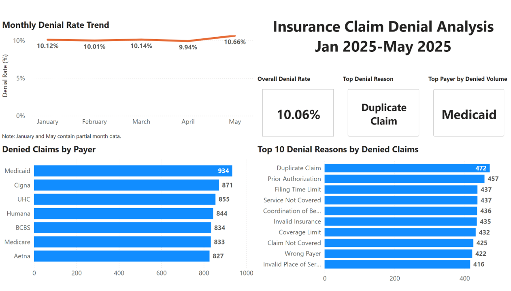

Healthcare-focused aspiring BI / Data Analyst with experience in Excel, Power Query, SQL Server, and Power BI.
Business question: Where are claim denials coming from, what are the top drivers by payer and reason, and how are denial rates trending over time?
Tools used: Excel, Power Query, SQL Server, Power BI
